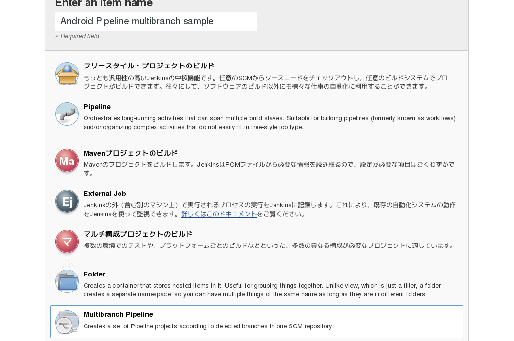
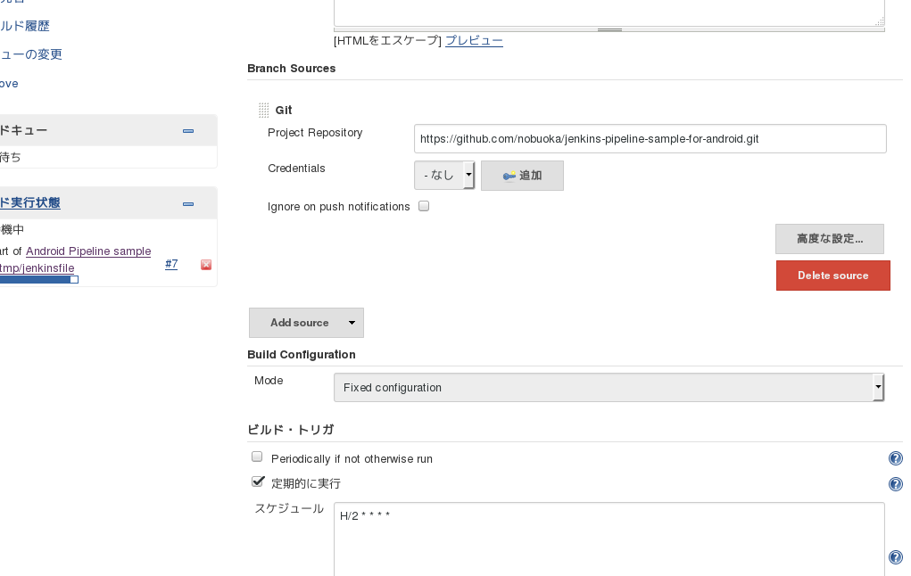
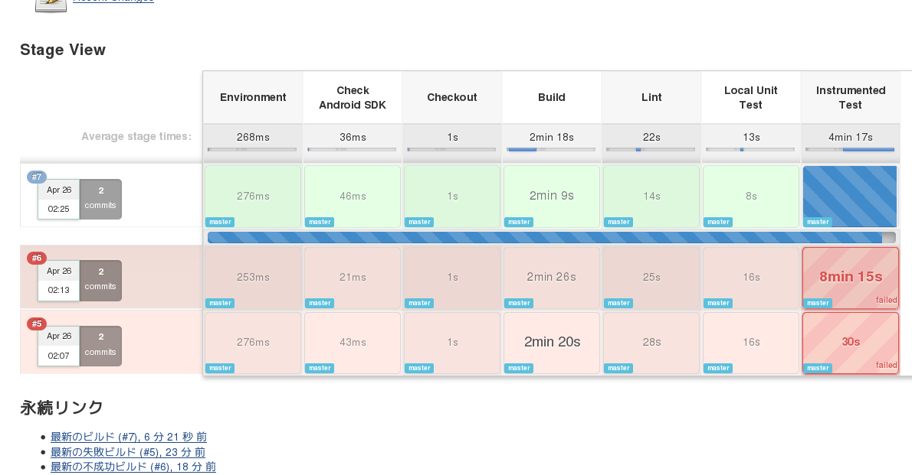

Android アプリ開発と Jenkins Pipelines
(祝 Jenkins 2.0 リリース)
こんにちは！
- はてな id:nobuoka
- ソフトウェア開発者
- モバイルアプリ開発 (Android、UWP)
- Web 開発 (Scala、Java、TypeScript、Perl)
- 仕事は Android アプリ 「はてなブックマーク」 開発
今日は Jenkins ユーザー向けの話
- Pipeline plugin (旧称 Workflow plugin) の紹介
- 業務のプロジェクトで導入済み
- 公式的に推奨されてる雰囲気
- 以下のようなチームは乗り換えるといいかも
- シェルスクリプトでジョブの処理を書いている
- 複数のプロジェクトでパイプラインを構成している
祝！ Jenkins 2.0 リリース！
- 4/20 に正式リリース
After 659 releases of #Jenkins over 10 years, we hit a historic moment. Thanks for everyone who made it possible. pic.twitter.com/hFubhEc01c
— Kohsuke Kawaguchi (@kohsukekawa) April 21, 2016

Pipeline as Code
- Jenkins 2 の目玉の一つ
- ジョブの流れをコードで表現
- Pipeline plugin により実現
→ Jenkins 1.642.3 以降で利用可能
なぜ使うか
- ジョブの流れをリポジトリで管理できる
- Jenkins 側での設定 → 少
- Groovy での DSL の柔軟性
おすすめの構成
- Pipeline plugin の Multibranch プロジェクト
- Branch source として Git リポジトリ (or GitHub 上のリポジトリ) を指定
- Git リポジトリに Jenkinsfile をコミット
- Jenkinsfile にジョブの処理を記述
Jenkins のプロジェクトの準備
Multibranch プロジェクトを作成して
対象の Git リポジトリを指定してポーリング
ブランチごとのサブプロジェクト

Stage view
Andorid 固有の話 (テスト実行)
- Android SDK のセットアップ
- SDK コンポーネントのインストール
- テストのためのエミュレータ準備・起動
- → サンプルプロジェクト
- 開発中の段階だけど一通り動く
その他の話題
- Slack や GitHub への通知 →
curlで Web API 叩いてる - 特定ブランチで実行されたときにアプリパッケージを配布するとか
おわり
- Jenkins 2.0！
- Pipeline plugin！！
- シェルスクリプトで頑張ってたりプロジェクトの連携を頑張ってるなら乗り換えてもいいかも？
- Git で開発してるなら Multibranch プロジェクトを使おう！！